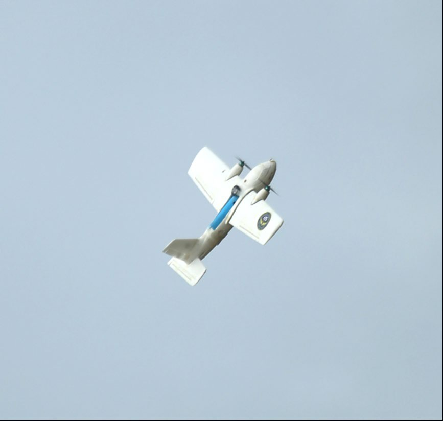

CUADC 2025 · National 2nd Prize
Fixed-Wing UAV — Autonomous Reconnaissance & Strike
A 1.74 m-span, 2.4 kg hand-launched platform that searches four target wells, reads a two-digit marker, decides which one to hit, and delivers a payload — fully autonomously, in under 100 seconds.
Perception
YOLO11-OBB rotation-box detection → 128×128 crop and de-rotation → YOLO11-CLS upright classification → digit detection. 91.8% end-to-end accuracy at 26 FPS.
Acceleration
CUDA 4-stream concurrency lifts FPS 5 → 24 (+158%) and cuts latency 32 → 12 ms; TensorRT FP16 brings inference to 4.73 ms/img at 0.5085 mAP50-95.
Flight & Mission
Custom BLink (pymavlink) link layer, Lua aerobatics — 35° steep climb, half-roll reversal — inserted as autonomous waypoints; crosswind drop compensation via RK4 trajectory integration.

